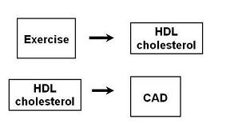
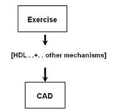
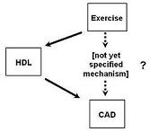

Lead Author(s): Jeff Martin, MD
We are looking at the relationship between exercise and CAD,
What is the pathway under investigation?

If you do not care about the exact pathway or you are only thinking about one pathway by which exercise can influence the development of heart disease, and HDL was right in the middle of this pathway,

Confounding Variable: Another Pathway - Adjust for HDL
If interest is in a pathway other than through HDL,
- then HDL is a confounder and we want to control for it.

- Therefore, HDL is extraneous to pathway under study
- Confounding factors are extraneous factors